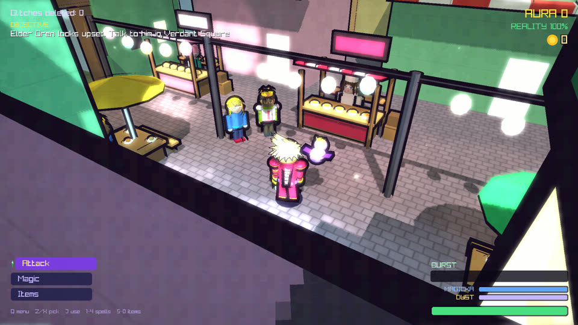
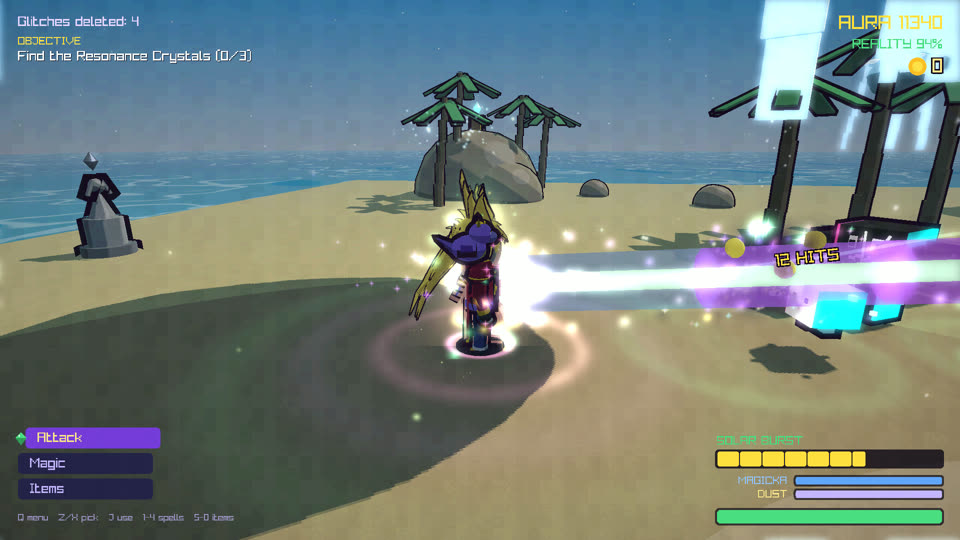
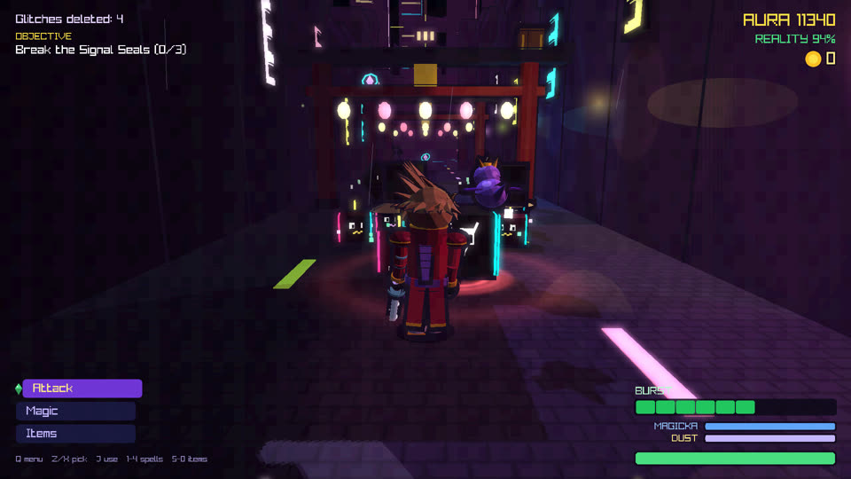
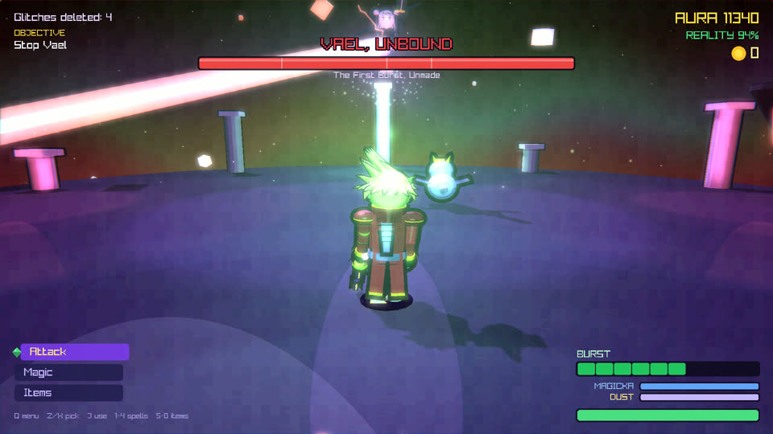
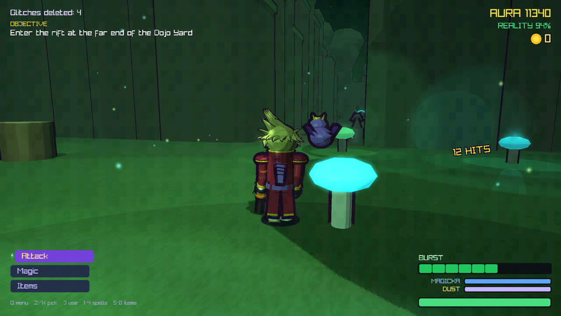
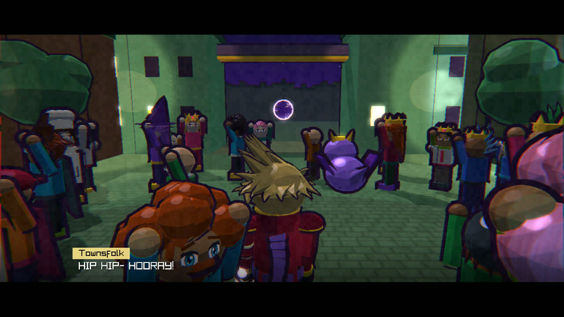

About the game
Twenty years ago, the Great Burst tore Emerald Isle into the sky. Cities rose into the clouds, oceans forgot how to fall, and Glitches crawled out of the cracks in reality. Kyro is just a courier, until something ancient pours into him. Now he glows.
- Combo-driven 3D action with dodges, dashes, lock-on and finishers
- Two transformations: Emerald Burst and Solar Burst
- Five Hourkeys to collect, plus fire, crystal, thunder and cure Magicka
- Seven bosses across beaches, forests, sky ruins and a neon city
- A hidden corridor between worlds, holding Kyro's lost memories
- A full original soundtrack






About ZotixSoft
ZotixSoft is a small independent studio founded by Arvin Setareh. Contact: zotixgameshop@gmail.com